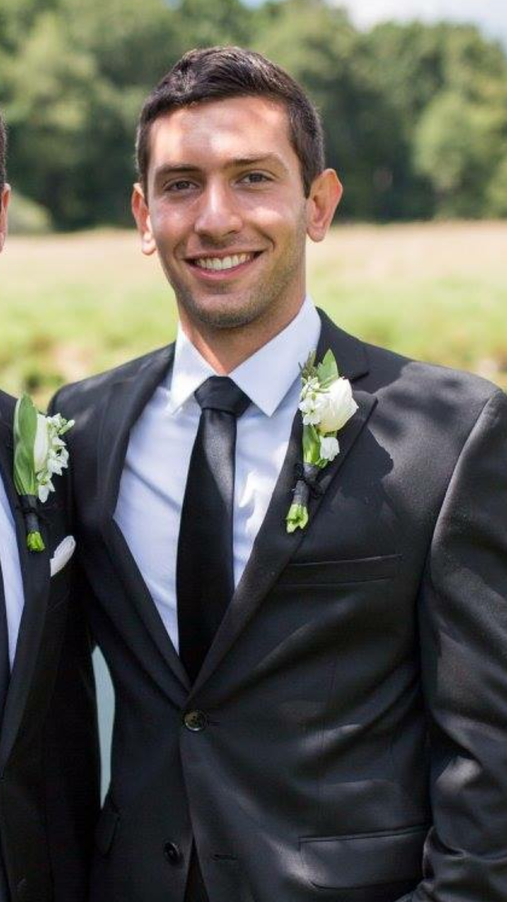

Samuel Holtzman
I come from a big family in Ann Arbor, Michigan. My family is a little different from most due to the fact that my mother's sister married my father's brother. That's right, two brothers married two sister. I consider myself the youngest of five technically. In my immediate family, I have an older sister who is five years older than me, and my brother who is eight years my senior. My aunt and uncle have a boy, who is also five years older, and a girl who is 3 months older. The five of us grew up together and are extremely close.
I went to the University of Michigan to study environmental science and graduated in 2015. Afterwards, I worked as a contract field biologist for the city of Ann Arbor looking at how the overpopulation of deer affect the native plant communities.
In July of 2018 I enrolled at a full stack coding bootcamp through Northwestern. I wanted to make a career shift after working in several different industries over the past several years. It was time to make a change and begin learning a new set of skills.